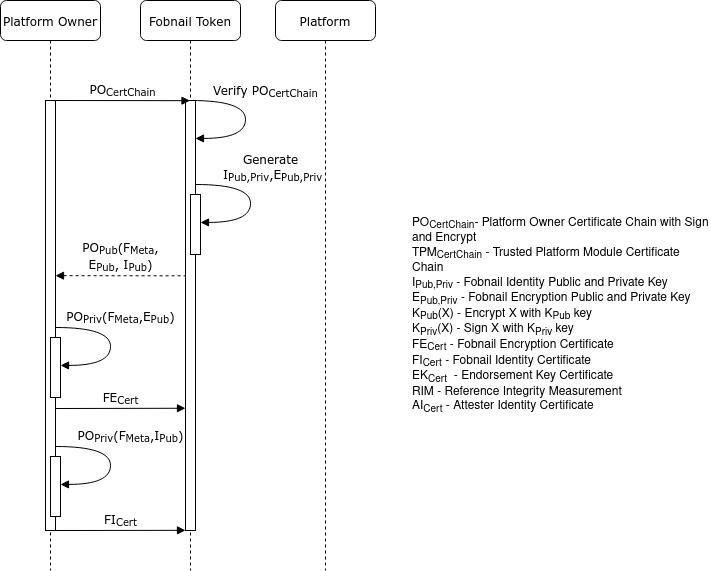
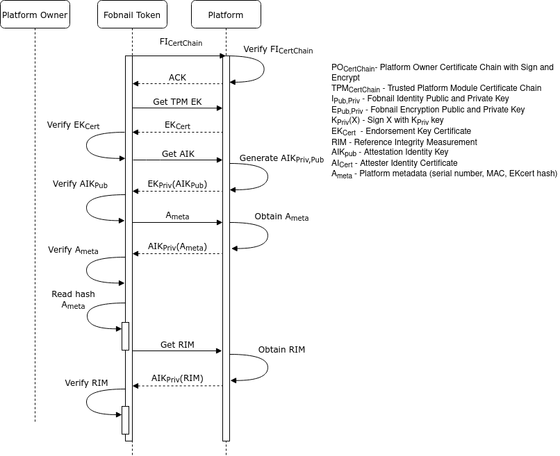
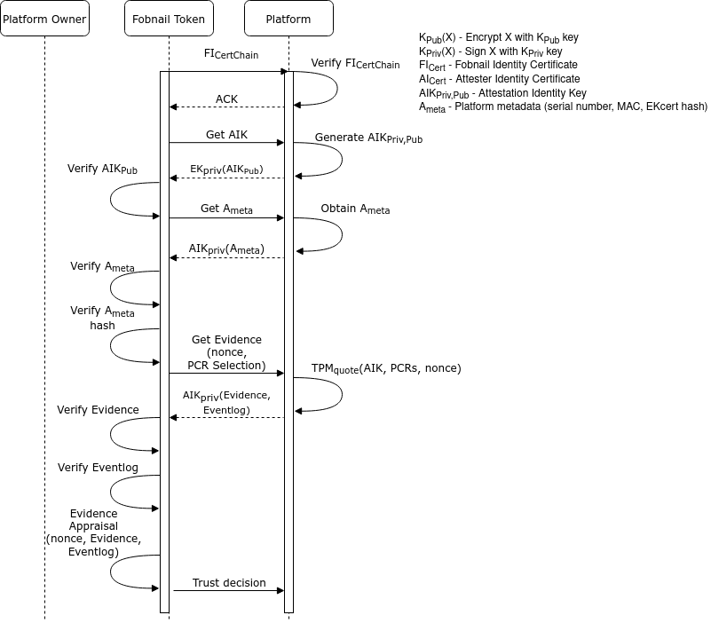

Fobnail architecture
Fobnail provisioning
The purpose of provisioning is to provide a controlled process for an individual to take ownership and configure the Fobnail. During the provisioning process the token should provide the following information to the provisioner:
- A public key to use for generating an identity certificate
- A public key to use for generating an encryption certificate
- Metadata about the token, e.g. model, serial number, etc
A token will consider itself provisioned when it is in an unprovisioned state and a provisioner sends it the following information:
- A certificate chain for the provisioner
- An identity certificate containing the public key the token generated
- An encryption certificate containing the public key the token generated
Either during provisioning or post provisioning a provisioner may send the following information,
- RIM Database
- Policy Database
- Attestation Protected Object
This information must be signed by private key for the provisioner identity certificate contained in the provisioner Certificate Chain.
Fobnail provisioning diagram

Platform provisioning
Fobnail architecture consists of two main functionalities - provisioning and attestation. We need to provision a Fobnail token and platform. The platform provisioning is split into remote provisioning and local provisioning. During the remote provisioning, the platform can connect to the platform owner. The platform owner verifies the platform state and provides the RIM and attestation policies to the Fobnail token. The platform receives an attestation identity certificate that specifies the platform. The certificate is based on platform metadata (CPU serial, MAC) and the AIK public part.
Remote platform provisioning diagram

In the case of local provisioning, the Fobnail token takes the platform owner role. The Fobnail token does not receive the policies, and default policies policies are used during the attestation.
Local platform provisioning diagram
Attestation
Fobnail role in the attestation of a system is to evaluate an Attestation Token and arrive at a decision whether the attested platform represents a good state. Fobnail is not an enforcement point for this decision and can only provide a physical and digital response to convey its decision. The physical response assumes that a user is monitoring the Fobnail Token and will take appropriate enforcement action(s). A digital response comes in the form of an Authorization Token that is returned back to the system. The assumption here is that the Authorization Token can securely be used by the system to enforce the decision or forwarded to an external entity that can enforce the decision.
Attestation diagram
